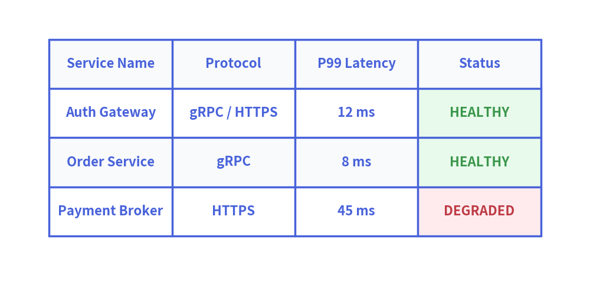

Table Component
The Table component renders 2D tabular data, comparison matrices, and database schemas with fine-grained styling control over borders, headers, alternating even/odd row backgrounds, and specific cell highlights.
1. Quick Example: Service SLA & Status Matrix

2. Geometry & Coordinate Mechanics
- Top-Left Anchor
(x, y): The coordinate passed todraw(xy=...)specifies the top-left corner of the first table cell. - Downward Flow: Rows move downward (
y - row_height), while columns extend to the right (x + col_width). - Sizing Modes:
draw(xy, width, height, data): Distributeswidthandheightequally across all columns and rows.draw_flexible(xy, column_widths, row_heights, data): Provides custom widths per column (e.g.column_widths=[30, 20, 25, 25]).
3. Styling API Reference
Cell Styling Methods
set_style_cell_header(background_color, text_style): Applies style exclusively to the header row (row 0).set_style_cell_rowheader(background_color, text_style): Applies style exclusively to the row header column (column 0).set_style_cell_evenodd(even_color, even_text_style, odd_color, odd_text_style): Alternating zebra-stripe styles for even and odd data rows.set_style_cell(background_color, text_style, rows=None, columns=None): Applies styling to specific rows or columns.
Border Styling Methods
set_style_border(top=None, top2=None, bottom=None, left=None, right=None, between_columns=None, between_rows=None):top,bottom,left,right: Outer perimeter border lines.top2: Sub-header horizontal divider line beneath row 0.between_rows,between_columns: Inner grid divider lines.